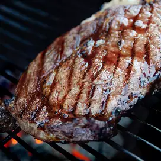

Zak's Steak

Bad Dad Zak's Lunchtime Steak
Ingredients
1 or two cuts of beef steak of your choosing
Steps
This can either be done on a BBQ, stove with cast iron pan, or in the oven!
- Heat BBQ to high
- With BBQ lid left open, place steak on direct heat
- For medium rare, cook for about 4 minutes on each side
- Only flip once
- Once the second side is done, remove from heat and serve
- Spread butter and salt on the cooked steak
- Optional - lay cheeder cheese on steak
Enjoy while hot!
Go Back